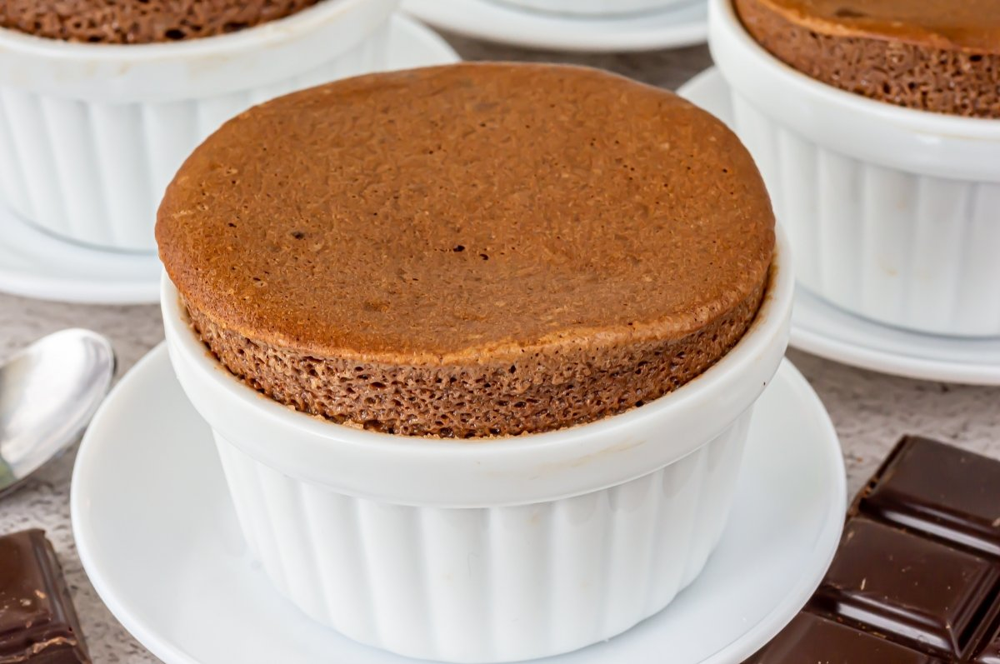

Soufflé de Chocolate
Un delicioso soufflé de chocolate, esponjoso y lleno de sabor.
Ingredientes
- 150 g de chocolate negro
- 4 huevos
- 50 g de azúcar
- 30 g de mantequilla
- Azúcar glas para espolvorear

Instrucciones
- Derrite el chocolate con la mantequilla en un baño maría.
- Separa las claras de las yemas. Bate las claras a punto de nieve.
- Bate las yemas con el azúcar hasta obtener una mezcla cremosa.
- Incorpora el chocolate derretido a las yemas, y luego agrega las claras con movimientos envolventes.
- Vierte la mezcla en moldes enmantecados y hornea a 180°C durante 12-15 minutos.
- Espolvorea con azúcar glas antes de servir.
Consejos
- Sirve inmediatamente después de hornear para que no pierda su esponjosidad.
¡Un postre delicioso para los amantes del chocolate!